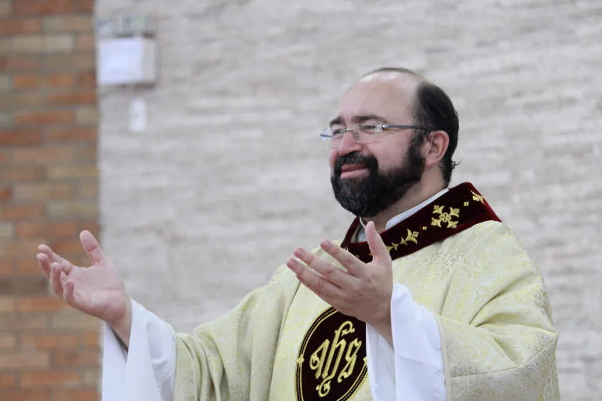

“Meus amigos, sejam bem-vindos ao nosso Site!”
Ele tem como objetivo divulgar as atividades de nossa amada Paróquia e também trazer as luzes do Evangelho com orientações litúrgicas, bíblicas e espirituais, para que nossa vida seja sempre vivida na alegria do Espírito Santo!!
Um abraço e minha Bênção,
Padre Paulinho!

“…para que nossa vida seja sempre vivida na alegria do Espírito Santo!”Padre Paulinho · Pároco